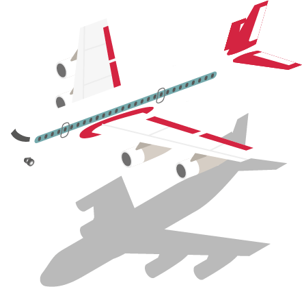
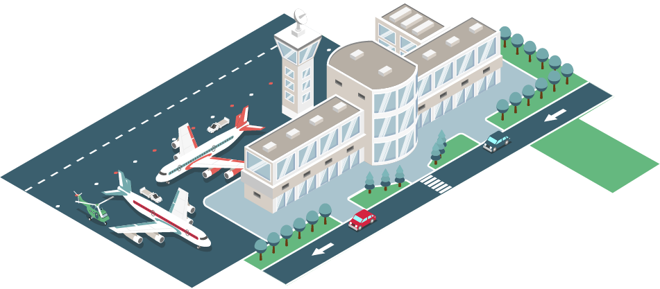
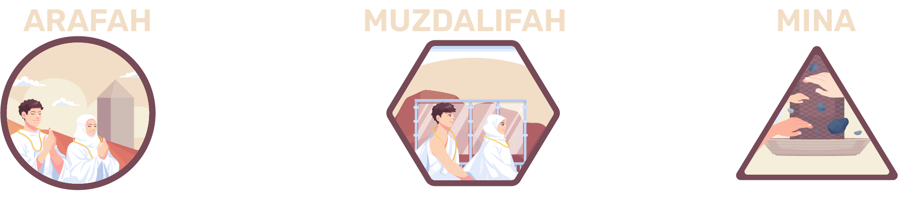
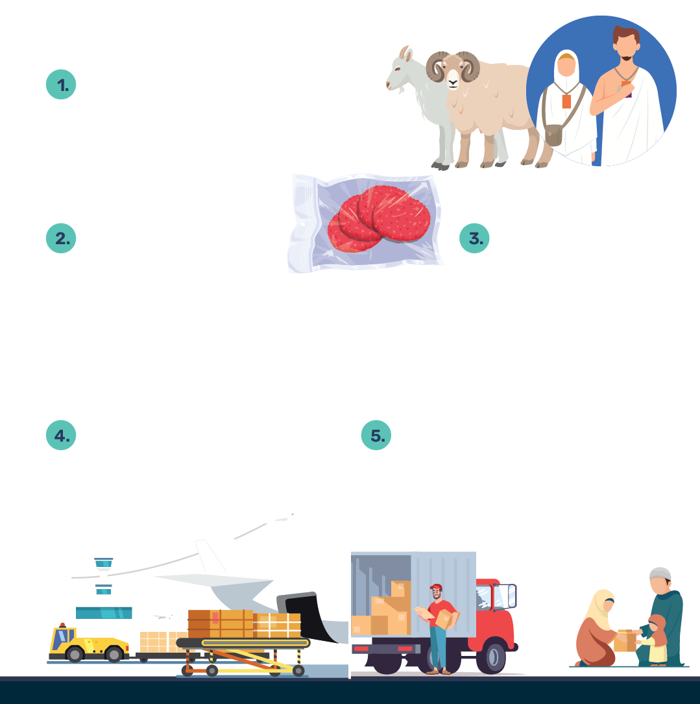
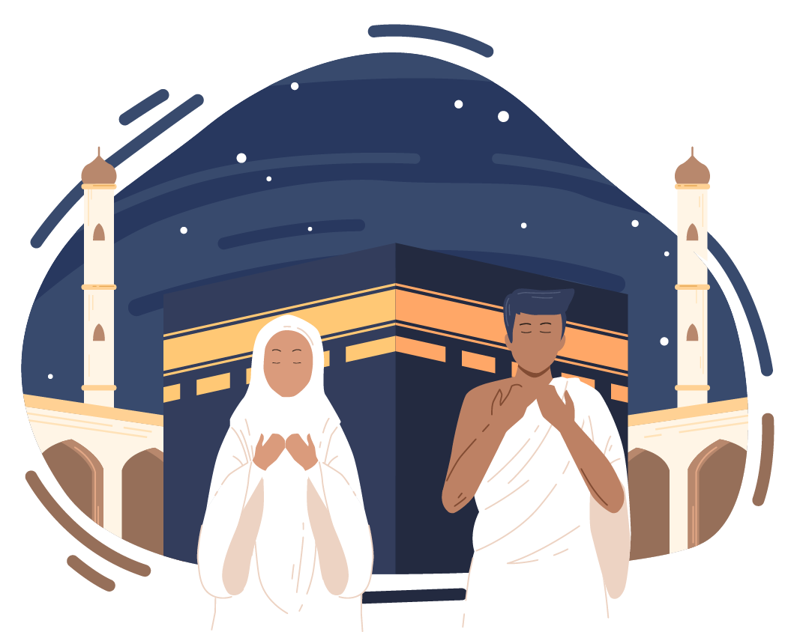

Menteri Agama Yaqut Cholil Qoumas menyatakan seluruh tahapan operasional penyelenggaraan Ibadah Haji 2024/1445 H berakhir. Selanjutnya, Kementerian Agama menggelar evaluasi ibadah haji pada 7-10 Agustus 2024, sekaligus mempersiapkan penyelenggaraan Ibadah Haji 2025/1446 H.
Penyelenggaran Ibadah Haji Indonesia 2024/1445 hijriah dinilai Kementerian Agama telah berjalan dengan sukses. Semua fase mulai pemberangkatan, puncak haji hingga pemulangan jemaah haji berjalan dengan baik dan lancar. Dari total 213.320 kuota, sekitar 213.275 jemaah haji regular diberangkatkan ke Tanah Suci, Arab Saudi pada 12 Mei – 11 Juni 2024.
Pelaksanaan puncak haji di Arafah, Muzdalifah dan Mina (Armuzna) yang berlangsung mulai 14 – 19 Juni 2024 berjalan lancar. Salah satu keberhasilan ini berkat penerapan skema Murur, yaitu mabit dengan cara lewat tanpa turun dari kendaraan di Muzdalifah menuju Mina. Sehingga keterlambatan pergerakan haji di Muzdalifah tak terjadi lagi seperti pada 2023.
Pemulangan 212.720 jemaah haji dalam 553 kloter ke tanah air berjalan lancar mulai 21 Juni hingga 22 Juli 2024. Hingga akhir operasional penyelenggaraan haji, ada 46 jemaah masih dirawat di rumah sakit Arab Saudi. Kesemuanya dirawat tanpa biaya dan dipantau oleh Kantor Urusan Haji (KUH) di Jeddah.
Kementerian Agama menilai penyelenggaraan Ibadah Haji 2024/1445 H ini sukses dan lebih baik dari tahun-tahun sebelumnya. Indikator kesuksesan ini berkat pelaksaan formulasi skema 4 – 3 – 5, yaitu 4 Hal Serba Perdana Haji 2024; 3 Pengembangan Ekosistem Potensi Ekonomi Haji; dan 5 Inovasi Haji 2024
Serba Perdana Pada Haji 2024
Pelayanan Fast Track
Pada tahun ini ada 127.073 jemaah haji Indonesia (lebih dari 50%) merasakan layanan fast track .


Soekarno-Hatta
52.856
(128 kloter)
Adi Soemarmo
35.482
(100 kloter)
Djuanda
38.735
(106 kloter)
Layanan Katering
Layanan katering/konsumsi untuk pertama kalinya diberikan secara penuh selama jemaah haji berada di Makkah Al-Mukarramah. Total 17.492.983 boks didistribusikan dan dinikmati jemaaah selama pra dan pasca Armuzna. Ini belum termasuk lebih dari 5 juta boks katering yang disiapkan selama puncak haji di Armuzna dan di al-Madinah al-Munawwarah.
Penambahan Kuota Jamaah
Dalam sejarahnya, Indonesia untuk pertama kalinya mendapatkan tambahan kuota sebanyak 20.000 jemaah. Hal ini berkat lobi yang dilakukan Presiden Joko Widodo kepada Raja Salman dan Pangeran Mohammed bin Salman al-Saud.
Skema Murur
07.37

Kebijakan skema murur pertama kali diterapkan secara terencana dan sistematis. Murur adalah skema pergerakan jemaah dari Arafah (usai wukuf) menuju Muzdalifah (melintas tanpa turun), lalu menuju ke Mina. Ada sekitar 51.899 jemaah yang terdaftar menjalani skema ini, meski dalam realisasinya lebih dari itu.
Skema ini dimulai pukul 07.37 waktu lokal Arab Saudi, seluruh jemaah haji di Muzdalifah sudah diberangkatkan ke Mina. Berbeda pada 2023, karena jumlah jemaah lebih sedikit, proses mobilisasi jemaah berlangsung hingga pukul 13.30 waktu lokal Arab Saudi.
Pengembangan Potensi Ekonomi Haji
Ekspor Bumbu Nusantara
Ekspor bumbu Nusantara untuk kebutuhan dapur penyedia katering jemaah haji Indonesia. Tahun 2023 kebutuhan bumbu nusantara mencapai 16 ton, tahun 2024 meningkat menjadi lebih dari 70 ton. Kedepannya potensi kebutuhan bumbu nusantara mencapai 300 ton.
Estimasi Kebutuhan Bahan Baku Makanan Jemaah Haji Indonesia
Potensi kebutuhan lainnya adalah buah-buahan, sprei, sarung bantal, toiletries , handuk, keset, kelengkapan cuci dan mandi, serta oleh-oleh.
Daging Dam Petugas dan Jemaah Haji Dikirim dalam Bentuk Kemasan Daging Olahan

Inovasi Haji
Aplikasi PPIH
Transformasi digital dalam rekrutmen petugas Panitia Penyelenggara Ibadah Haji (PPIH). Pendaftaran dilakukan terbuka dan online, seleksi menggunakan Computer Assisted Test (CAT) bagi semua petugas termasuk tenaga pendukung PPIH di Arab Saudi dan mahasiswa Timur tengah.
Aplikasi Kawal Haji
Aplikasi Kawal Haji, ruang bagi jemaah dan keluarga serta masyarakat umum dalam menyampaikan keluhan/aduan jika mengalami masalah.
Safari Wukuf
Safari Wukuf Lansia Non Mandiri dan Disabilitas. Ada 293 jemaah haji lansia non mandiri dan disabilitas yang terfasilitasi saat menjalankan wukuf pada 2024 ini.
International Patient Summary (IPS)
Penggunaan International Patient Summary (IPS) atau riwayat kesehatan jemaah haji pada kartu jemaah haji. IPS berisi resume kesehatan jemaah dari sisi demografi, alergi/intoleransi, pengobatan, penyakit, dan imunisasi/vaksinasi. Dengan informasi ini, layanan kesehatan di Arab Saudi dapat memberikan tindakan medis yang lebih tepat dan terukur.
Penyederhanaan Proses Visa
Jemaah yang sudah terbit visanya namun karena sesuatu hal batal/tunda, diinput oleh tim Kantor Kementerian Agama Kabupaten/Kota ke Sistem Pengelolaan Data dan Informasi Penyelenggaraan Ibadah Haji Secara Terpadu (Siskohat). Lalu Kantor Wilayah Kemenag Provinisi dan Pusat dapat segera membatalkan/mengajukan visa penggantinya. Pendekatan ini berhasil mengoptimalkan serapan kuota haji hingga tahun ini tersisa 45 kuota.

Sisa Kuota Haji Reguler 8 Tahun Terakhir
Kerajaan Arab Saudi telah mengumumkan bahwa kuota haji Indonesia pada 2025 mendatang sebanyak 221.000 orang. Awal September 2024 mendatang akan dimulai pertemuan persiapan dan rapat dengan perusahaan penyedia layanan (paket, akomodasi dan konsumsi).
Jadwal Musim Haji 1446 H / 2025
Juni
Sept
Okt
Jan
Feb
Apr
Penulis
M. Rizal Maslan
Editor
Dieqy Hasbi Widhana
Frontend Developer
Dedi Arief Wibisono
Desain Grafis
Mindra Purnomo